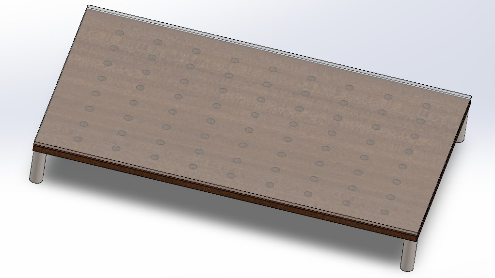
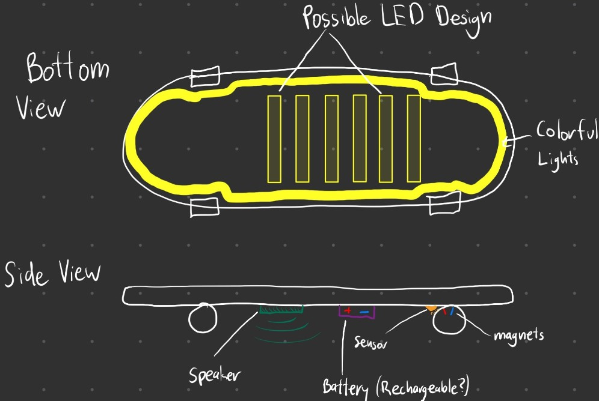
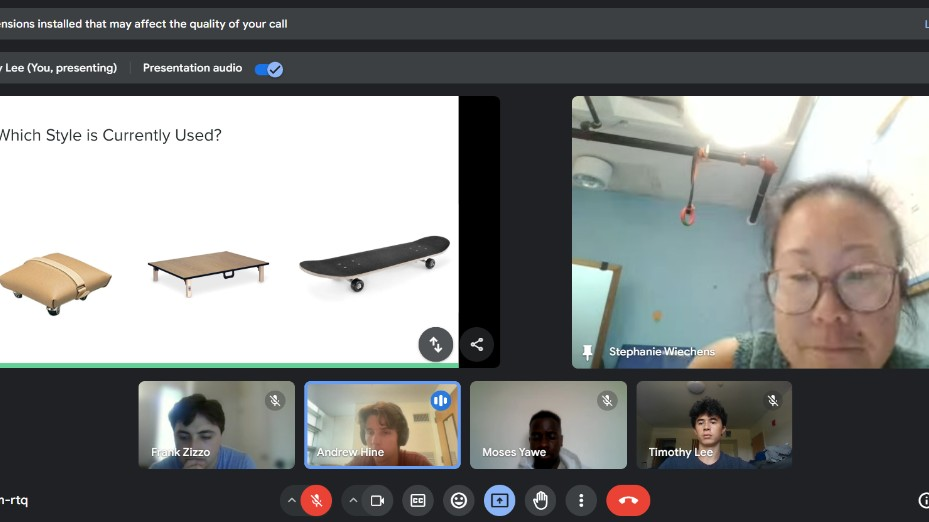
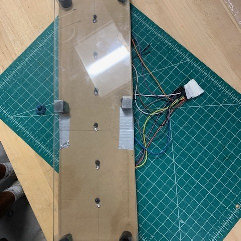
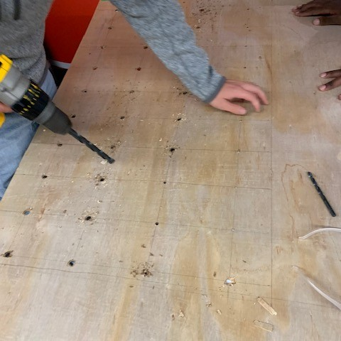
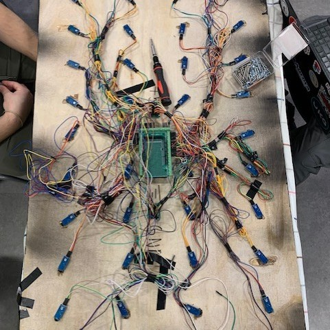

Project 04/ 07
Assistive Powder Board
A low-cost powder board designed to motivate young users to do their physical therapy exercises.

What is a powder board?
A powder board is an exercise table that physical therapists use to help patients rehabilitate and improve leg mobility. Wheelchair users are common users. Sitting all day is unhealthy for them, and moving their legs as much as they can is extremely beneficial.
If powder boards exist, what's the problem?
They are expensive. These simple boards cost anywhere from $300 to $6,000. Physical therapy is also difficult and boring, especially for our target user: children in wheelchairs.

The solution
A custom powder board that is cheap and rewarding to use. Our first idea was a skateboard-like object with lights, satisfying sounds, and songs that activate when it detects movement. The patient would rest a leg on it and roll it back and forth.

First concept design

Meeting our client
After consulting our client online, we chose a different solution: a table with holes for infrared sensors and an omnidirectional skate, like a traditional powder board.


